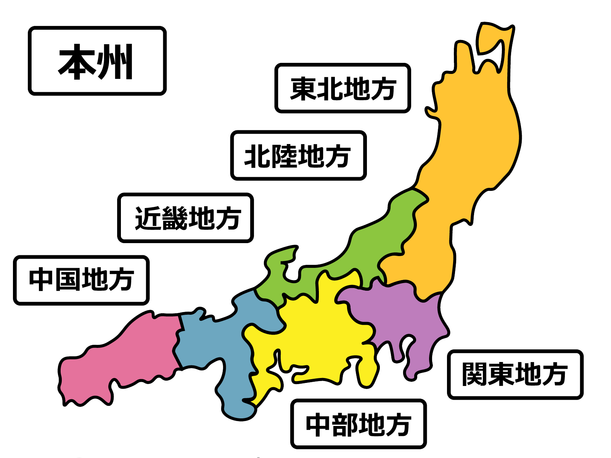

 本州 | ほんしゅう 本州島是日本列島中最大的島嶼，其上包含了被稱為東北、關東、中部、近畿與中國的五個地方，包括東京與大阪在內等日本最重要的都會區皆位於本州島上 本州是日本最大的島嶼和核心。 它也是世界第七大島。 在本州島上，大部分日本人口和大部分主要城市，包括東京首都。 它是日本的中心，本州通過海底隧道和橋樑與其他主要島嶼相連。是一個多山的島嶼，也是該國許多活火山的所在地。 其最著名的山峰是富士山。